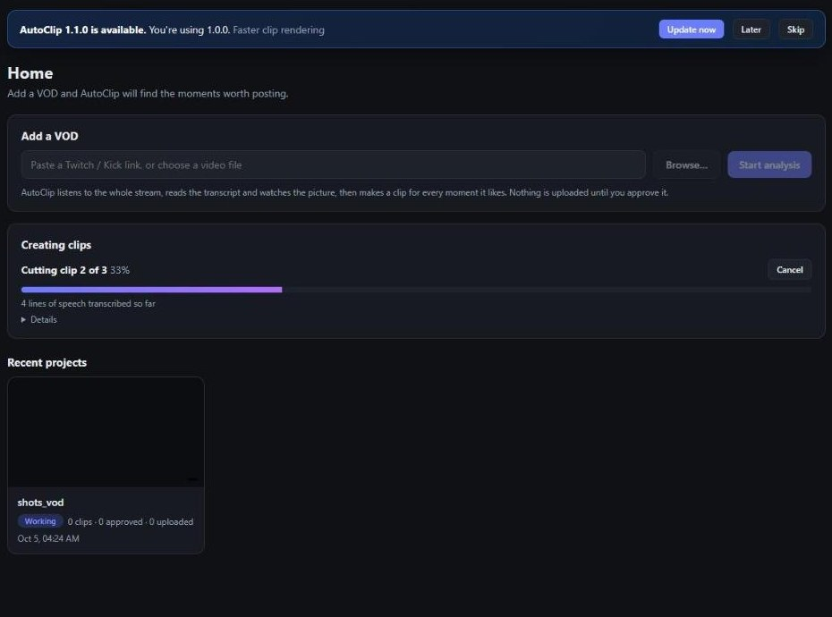
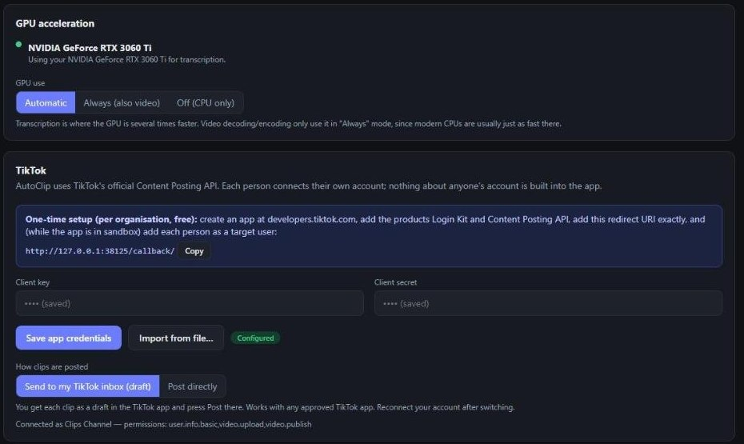
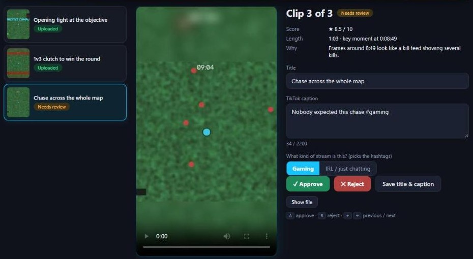
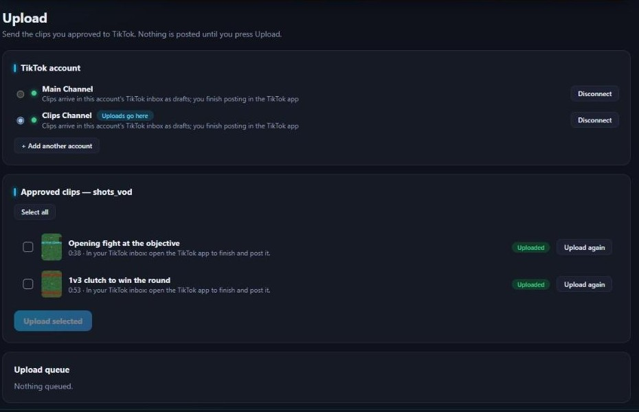
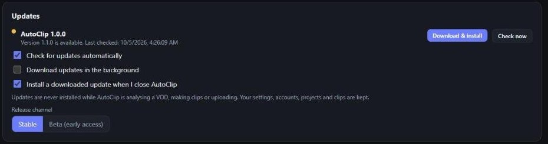

Built for the way streamers actually clip.
From a six-hour VOD to a queue of reviewed, captioned, vertical clips, without leaving one window.
It watches the whole stream so you don't have to
AutoClip examines every second of your VOD, however long, and fuses everything it learns into one picture of where the interesting moments are.
- Picture: motion, HUD and kill-feed activity, flashes, banners, hard cuts
- Audio: loudness against your normal volume, laughter-like bursts, excited voice, pauses
- Speech: the full timestamped transcript
- Chat: message spikes and hype emotes (Twitch)

Whisper, on your PC
Speech is transcribed locally with OpenAI's Whisper model, with word-level timestamps. Long VODs are processed in chunks with checkpoints, so an interruption never costs you the whole run.
Words with timestamps, not guesses
The transcript is what lets AutoClip start a clip at the beginning of a sentence and end it when the laughter has finished.
- Language detected automatically
- Fast, balanced or best-quality models
- Bogus "thanks for watching" lines Whisper invents on music are filtered out
Use the graphics card you already own
With an NVIDIA GPU, transcription runs several times faster and the most accurate Whisper model becomes practical. It's optional, one click in Settings, and everything keeps working on the CPU without it.
Measured on an RTX 3060 Ti (10 minutes of speech):
| Model | CPU | GPU |
|---|---|---|
| Whisper small | 126 s | 35 s |
| Whisper large-v3-turbo | impractical | 26 s |
GPU acceleration needs a one-time ~1.3 GB download of NVIDIA's CUDA libraries. We only use the GPU where it measurably helps.
Honest about what helps
We benchmarked video decoding and encoding on the GPU too: on a modern CPU they were no faster, so they stay on the CPU by default. You can still switch them on if your PC is different.
Not fooled by shouting
Someone yelling "no way" at a menu isn't a highlight. AutoClip only trusts a reaction when the voice sounds excited or something happened on screen just before it, and then pulls the clip back to include that cause.
Clips that make sense on their own
Windows include the setup, the moment and the aftermath. Edges snap to sentence boundaries and calm moments, dead air is trimmed, and overlapping or duplicate moments are dropped.
- Optional AI review of real frames (free local model, Claude, or Ollama)
- Every rendered clip is verified: length, size, audio, not frozen, not silent
- Honest warnings if any part of the analysis couldn't run
It actually looks at the footage
Beyond motion and flashes, AutoClip can show sampled frames from each candidate to a vision model, so "a goal was scored" is something it sees, not something it infers from volume.
- Free local AI: a one-time 305 MB download, private, no account
- Claude (optional, your own API key)
- Ollama vision models, if you run them


You're always the editor
Every clip is shown with its score and the reason it was picked. Watch it full-size, approve or reject it with one key, rename it (the file is renamed too) and write the caption you want.
- A approve, R reject, arrow keys to move
- Vertical 9:16 with zoom, full-frame or fill layouts
- Optional burned-in captions from the transcript
Official, queued and double-post-proof
AutoClip uses TikTok's official Login Kit and Content Posting API. Connect as many TikTok accounts as you like, pick which one a batch goes to, and watch the queue.
- Sign-in happens on tiktok.com, never inside AutoClip
- Tokens are encrypted for your Windows account only
- The same video is never uploaded twice to the same account (even renamed)
- Rate limits are respected automatically
Posting needs a free TikTok developer app. Until TikTok approves ("audits") it, clips arrive as drafts in your TikTok inbox for you to finish.


Stay current without lifting a finger
AutoClip checks for new versions, downloads them in the background and verifies them before anything runs: every release is cryptographically signed, so a tampered or fake update is rejected.
- A small, dismissible notice: Update now or Later
- Never installs while a VOD is processing or clips are uploading
- Can install when you close the app
- Settings, accounts, projects and clips are kept
- Interrupted update? It tells you and offers a retry. Older versions stay available
And the details
Private by design
No AutoClip account, no servers of ours. Your videos and clips stay on your PC; secrets are encrypted per Windows user.
No silent failures
If transcription, chat or AI review can't run, AutoClip says exactly which stage failed and why, instead of pretending everything worked.
First-run setup
A short wizard picks your folders, checks your GPU and offers the optional extras. Skip anything you like.